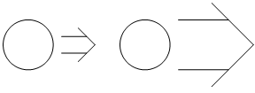
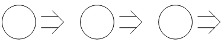
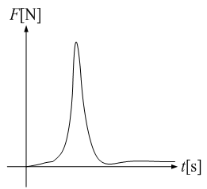
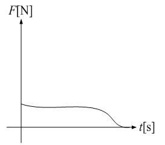
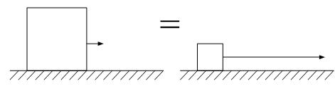

広告
物理量
流体力学で使用する物理量の定義を行います。
力学的な物理量は、質量[kg]、長さ[m] 、時間[s]の3つの単位の組み合わせで表されます。
・速度v[m/s]
単位時間当たりに進む距離。また、時間と距離の変換。時間をt [s]、移動距離をl[m]とすると次式で定義されます。
・加速度a[m/s2]
時間に対する速度勾配
重力も加速度です。これは重力によって質点に速度勾配が生じることを意味しています。
\(a\neq0\)：時間に対して速度が変化している。
\(a=0\)：速度は変わらない。
・力F[N]
質量m[kg]の時間に対する速度勾配。
単位には、ニュートン[N]が使用され、次式で定義されます。
[N] = [kg m/s2]
次の様にも表現できます。
力が大きい
より短時間でより大きく速度が変わる。高速で物がぶつかった場合など。

力が加わらない
速度が変わらない。同じ速度で動き続ける。

・運動量mv[kg m/s]
加えた力F[N]の総量。力積とも言います。簡易的に言うと何秒間、力を加え続けたかになります。
上式から大きな力F[N]が短時間加わった場合の運動量と、 小さな力F[N]が長時間加わった場合の運動量は等しいことがわかります。 つまり、運動量は力を加えた結果であり、過程は問われません。


次の様にも表現できます。
運動量が大きい→より大きな質量m[kg]の 速度v[m/s]が、より大きく変化した。
・エネルギーE[J]
加えた力F[N]の総量。簡易的に言うと何メートル力を加え続けたになります。
速度v[m/s]が距離l[m]と 時間t[s]の変換に使用されています。つまり、「何メートル力を加え続けたか。」 が「何秒間、力を加え続けたか。」に変換されていることがわかります。
上式から大きな力Fが短い距離加わった場合のエネルギーと、 小さな力F[N]が長距離加わった場合のエネルギーは等しいことがわかります。
単位には、ジュール[J]が使用され、次式で定義されます。
[J] = [N m] = [kg m2/s2]
エネルギーE[J]は、運動量mv[kg m/s] を速度v[m/s]で積分した量でもあります。

エネルギーは、様々な形態への変換ができます。例えば、力学的エネルギー[J] を熱的エネルギー[J]に変換することができる便利な単位です。
| prev | | | up | | | next |